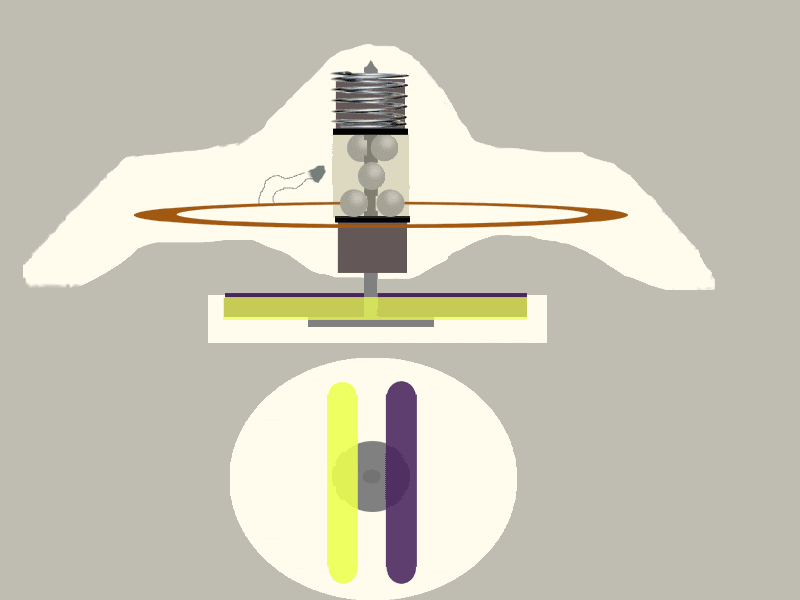
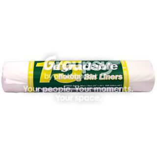
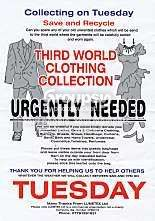

This is an old guide of mine which I never had time to fix the typos on so don't bust my balls about them.
Clothes
From the store: Removing the ink tags
Here is the inside of a circular clothing tag(the ones mostly used)

We all know these little bastards like to ruin our new clothes by leaking ink onto them, which is really hard to remove(takes days) and even then there's still some of the ink you can see. They will only leak if you use reasonable force to get the tag off.
I've found that the best way to deal with the whole scenario is to take the clothing you want but take 2 of the same and have it under that clothing, and maybe even rolled up to make it look like you only have one of the item. Take them to the dressing room and pull out a lighter and start melting a hole into the cone tip of the tag. You should now have a pin or butter knife so you can remove the spring and shim, to get to the ball bearings which you can either shake out our get out with the pin. Now that we've dismantled these parts, the halves of the tag should come apart easily. Then you put your item of clothing on underneath the clothing your wearing, and hang up the other item you took in, and make out it's not the right size or it doesn't look right. And now walk out of the store with your new top or w/e you just lifted.
Note: You don't have to use a lighter to burn a hole in the tag(which might cause a smell anyway), you can use a sharp knife or a saw blade to cut the cone tip off.
Note: I've heard magic bags work on clothing tags, so here is a link to what IMO is one of the best magic bag guides: http://www.rotteneggs.com/r3/show/se/210522.html
You could try a set up with a drawstring mall bag but it'd be harder to construct because you need flaps on your magic bags. An idea I had was to try lining a backpack with tin foil and using that as a plastic bag, but you might look suspicious with a backpack, unless you have a 8 year old girl with a pink barbie backpack.
The fake charity scam
Note: This might not get you the best of brand name clothing, and you may not get everyone to fall for it but you can get alot of clothes and IF your lucky you might get some expensive brand clothes that someone might not fit into anymore
What you need
White bin liners

Photoshop(to make fake charity leaflet) Example from google below

This is fairly easy to do and doesn't consume alot of time.
Go and get some white degradable bin bag liners and take them all out the packet and put them into sets of 2, roll them up and keep them together with thin elastic bands(2 bags for each house).
Now that you've done that get on your computer and design yourself a realistic looking charity leaflet asking for clothes(like the example shown earlier)
Now when your happy with the result print off as many as you need to and put the leaflet in with the bin liners.
Now what you do is you go into a few neighborhoods and post these bin liners with the leaflets through peoples letterboxes/ or leave them on the front doorstep.
Now hopefully some kind donating people will have put some clothes into the bags, ready to go to "charity"
Come back to the neighbourhoods you left your "charity" with; on the day you said the pick up will be on the leaflet.
Note: Look the part as a charity collector aswell, by wearing council worker clothes, or a suit. You may also want to rent a van out for the day.
Out the house
Note: This is fairly risky but at the same time thrilling, and besides whats life without risk?
Be on the listen out from co workers, friends, or just in general out on a Friday night or at the weekends the noise of house parties going on. These are the places were going to be getting our new clothes from.
Do not go at the start of the party or even towards the end of the party, because if you go at the start, everyone is going to be sober and either wondering who the fuck you are, or you won't be able to do your job right because you've been seen at the party and are now a suspect if anything goes missing. So the best time to go is in the middle of the party, now that more or less everyone should be fuck faced or stoned, so they don't know entirely whats going on, or even if they did they're not going to call the cops to a party, and they're not going to remember what happened the next day if they were pissed.
Basically all we do is when people are busy partying getting fuck faced, stoned, fucked or w/e; we enter the house and make our way upstairs to the bedroom(this is the other risky part, because someone might come in wih their GF ready to fuck, or there may be a couple already in there fucking, so be keep your ears open. If this is the case, then try another room) Now raid the wardrobe and fit as many clothes into your bag as you can. Now we either get the fuck out of there as quick as possible, or we go to the bathroom and have a piss and walk around like normal for a little while(maybe even act pissed to fit in with the crowd and not look suspicious)before leaving.
The plus side to this is:
- No one from the party will call the cops for obvious reasons
Not everyone will be remember everything from that night the next morning
Any people from the neighbourhood watching will just think your another partier going to and from the party(park your car in a different street)
Note: Just reminding you that this is the riskiest of the lot to try
Off the back of the van
Note: You need to run quicker than a nigger on a drug raid
What were going to be doing
Were going to be getting our new threads, before the actual shop gets them. How do we do that? you might be asking. Well it's simple, it's more or less a snatch and run with a tiny bit of risk.
1st you need to be up early enough and keep an eye on the store where the goods are that you want. Were looking out for when the delivery truck comes to the store to supply them with new stock. Make a note on how much stock they usually give them, how long they usually take, and where abouts they park up.
Making notes on where they park up is about looking for quick escapes such as alleyways, corners(new streets), dumpsters.
When you KNOW your ready, don't waste the opportunity. We don't have to worry to much about witnesses, because the deliveries are usually early in the morning, and besides we can always wear a get up and a cap and sunglasses, or ski mask.
But be cautious on the way to the van, and looking out for the supplier and if he's looking or not. Now make your way onto the back of the van, find what you want and just grab and run!(not infront of the van but to the side or back of it into a new area)
If your lucky they might have a cart with some stock on it, outside the van so you don't have to worry about getting seen on the van.
Note: This way could take you a month or 2 of planning but you can get the goods in bulk.
Off the washing line
Note: Another snatch and run type of thing, but a little less risk than the last 2.
1st we need to know whether the persons washing line your going to be stealing off, has any clothes to your liking or worth stealing. This can be known by watching and taking a note on what your mark wears. But we also need to be watching and making notes on his neighbors and the actual marks routines: What times are they at work, when do they finish, will anyone be in, do they have kids, what days does she hang the washing out. Make a note on anything that could interrupt/ disturb your work.
Now when you think you have enough info, are ready to do it, and are sure they have the clothes you want then get yourself a disguise such as a fascia fitter(complete with toolbox...maybe even rent a van out for the day but have someone elses plates on it), or a salesman with clipboard.
1st of all knock on the door JUST to make sure no ones in, and don't constantly look, but be weary of neighbours that MIGHT be in. If someone is in then just say you had a call to fit a fascia in, and they will usually send you packing, same with the salesman get up. But if they're not in, then were in luck and can proceed to the back garden where the washing is. Now this is why I recommended the fascia get up, because you can pretend to start getting "set up" to do the "fitting" if there are neighbours in, thy usually won't stick around to look because they'll get bored with you taking to long to set up.
Now simply go to the washing line, find what you want on the line, unclip it and putinto your toolbox/bag or w/e you have and be on your way.
Note: It's vital you take notes on your marks routines.
Other
This section is for getting other stuff besides clothes
Receipt scam
What you do is buy an item from where ever.
Then get this barcode making program, download Barcode Magic from:
http://www.barcodemagic.com/
Here's the serial for it:
Quote:
|
Name: Registered S/N: BM-4626-83
|
Optional: You can also scan the receipt and change the day on it.
Then go into the store a different day and pick the same item off the shelf and stick your fake barcode on it(copy the barcode of the item you bought) and walk out. Then show your receipt to the guy at the door and hopefully he’ll let you go.
Then your mate takes one you actually paid for, with the original receipt, and then you get your money back from it.
So you get your money back, and get to keep the item.
[highlight]Sensor scam[/highlight
First use the magic bag to lift something, and get home. The tag won't have been deactivated, and this the key to the scam were going to do.
Go back to the same store you lifted from with the magic bag and take the tag with you and enter the store. The alarm will go off but since you’ve only just entered you obviously couldn’t possibly have stolen anything yet, so the greeters will just think the sensors are being screwy.
This could make a great opportunity for shoplifting and just walking out of the store with the alarm going off, but the retards thinking your ok and it’s just the sensors still playing up.
Those are just simple ideas I have used in the past.
Some of this such as the receipt idea of scanning it won't always work because they have special UV markings on them in some stores and the paper has to be the right type, although if you wet your fake receipt a little bit (don't fucking soak it, just splash it with a little bit) then you can get it to feel like a genuine one a little bit; don't try your luck too much with it though, it's easier to find a random receipt outside the door and try it.
Any questions then feel free to ask. In all of my time of shoplifting clothes have been my speciality; if you have anymore questions about inktags, hard tags, super tags etc and I'll do my best to answer them clearly for you.


 Shoplifting clothes, tags and magnets... ?
Shoplifting clothes, tags and magnets... ?


 Show Printable Version
Show Printable Version Email this Page
Email this Page Linear Mode
Linear Mode Switch to Hybrid Mode
Switch to Hybrid Mode Switch to Threaded Mode
Switch to Threaded Mode